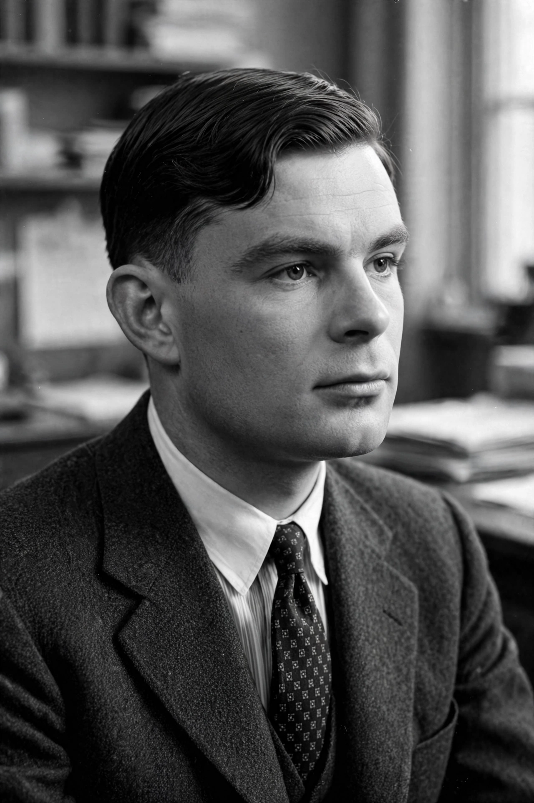

Alan Turing
| Born | 23 June 1912, London |
|---|---|
| Died | 7 June 1954 (aged 41), Wilmslow |
| Known for | Turing machine; codebreaking; Turing test |

[Image: a black-and-white photograph of Alan Turing in the 1950s, a young man in a suit, described from memory]Alan Mathison Turing (23 June 1912 – 7 June 1954) was an English mathematician, computer scientist, logician and cryptanalyst who was highly influential in the development of theoretical Computer science. His 1936 paper introduced the Turing machine, a formal model of computation, and with it the concepts of algorithm and computation that underlie the modern computer; he is widely considered the father of computer science and artificial intelligence.
During the Second World War, Turing worked at Bletchley Park, Britain's codebreaking centre, where he led the section that designed the Bombe machines that broke the German Enigma naval codes — work historians credit with shortening the war.
Work and legacy
Turing's post-war designs for the ACE were among the first detailed plans for a stored-program computer; he worked on early Manchester computers and wrote the first manual for programmers. His 1950 paper 'Computing Machinery and Intelligence' proposed the imitation game — the Turing test — as a criterion for machine intelligence and anticipated many arguments about AI still debated today.
In 1952 Turing was prosecuted for homosexual acts, then criminal in Britain, and subjected to chemical castration; he died in 1954 from cyanide poisoning, ruled a suicide. He received a royal pardon in 2013, and the 'Alan Turing law' of 2017 pardoned thousands of men convicted under similar laws. His portrait appears on the Bank of England £50 note, issued in 2021.